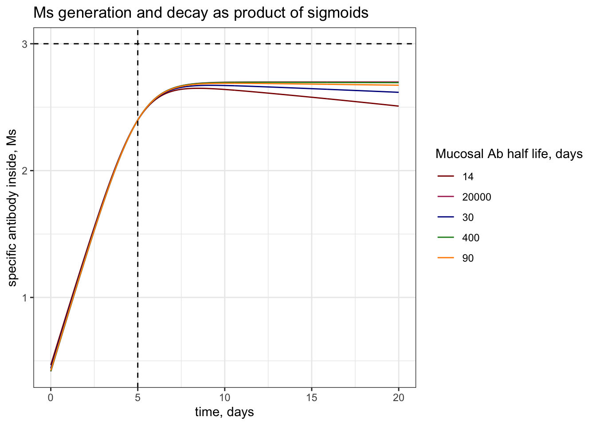
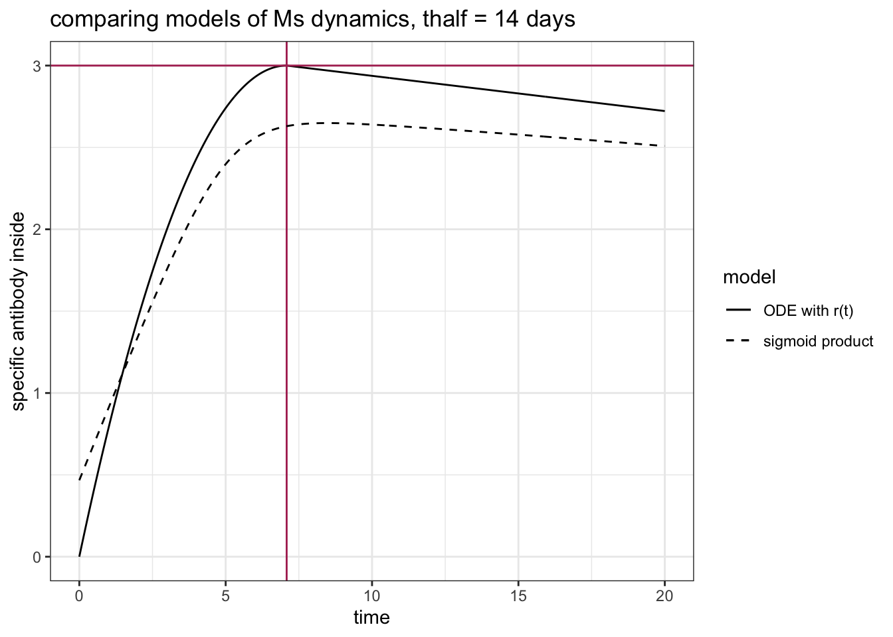
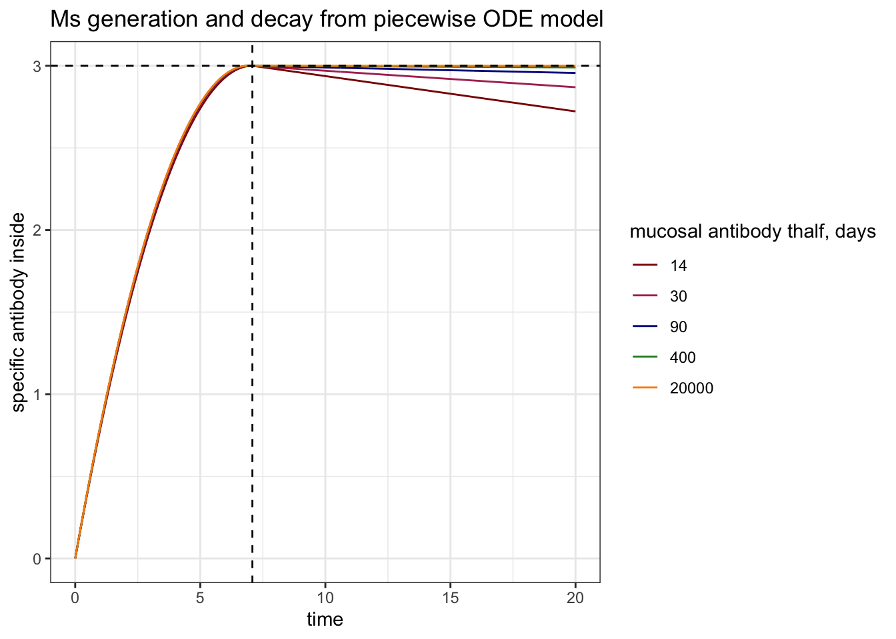

── Conflicts ────────────────────────────────────────── tidyverse_conflicts() ──
✖ dplyr::combine() masks gridExtra::combine()
✖ dplyr::filter() masks stats::filter()
✖ dplyr::lag() masks stats::lag()
ℹ Use the conflicted package (<http://conflicted.r-lib.org/>) to force all conflicts to become errors
#install.packages("deSolve")library(deSolve)#load functions#source(here("code", "functions", "functions.R"))#choose plotting colorsmy_colors =c("darkred", "maroon", "darkblue", "forestgreen", "darkorange", "goldenrod") #choose color rangenum_colors =length(my_colors) #set number of colors needed for plottingmy_colors =colorRampPalette(my_colors)(num_colors) #increase number of colors staying in color range
Objective
The goal of this document is to develop a simple model of antibody transport from the inside of the mucosal epithelium to the outside lumen of the mucosal epithelium. We would like to understand the extent to which pre-existing antibody titers from previous infections to unrelated pathogens can interfere with the transport of newly generated IgA specific to a currently infecting pathogen.
Model outline
Our conceptual model reduces mechanistically to a michaelis-mentin enzymatic system with competitive inhibition. Below, we show how a mechanistic ODE model of antibody transport can be modelled with MM kinetics when transport across epithelium is a rate-limiting step.
Our model considers two physiological compartments: the mucosal side of the epithelium and the external lumen on the opposite side of the epithelium. We call these compartments “Mucous” and “Lumen”.
During an infection, IgA antibodies specific for the pathogen are generated in the mucous compartment and are transported via polymeric immunoglobulin receptors, pIgRs, to the lumen. We refer to the pathogen-specific antibodies in the mucous compartment as \(M_s\) and the specific antibodies in the lumen compartment as \(L_s\). We hypothesize that these antibodies must compete with all of the IgA remaining in the mucosa from previous infections with other pathogens, which we refer to generally as non-specific mucosal IgA, \(M_{NS}\). The population of nonspecific antibodies that are transported to the lumen is referred to generally as \(L_{NS}\)
We can model the flux of IgA antibodies to the lumen as an ODE model of these two populations of mucosal IgA antibodies - \(M_S\) and \(M_{NS}\) - which compete explicitly for transport proteins, \(R\). The number of specific and nonspecific antibodies on the lumenal side, \(L_S\) and \(L_{NS}\) respectively, depends on the rate of removal of IgA from the lumen and the rate at which the populations are transported.
Importantly, we assume that pIgRs, \(R\), are constantly being trancytosed across the epithelium at rate \(r\) regardless of whether they are bound by sIgA. This gives rise to the following set of ODEs:
This tracks the number of empty receptors at the basolateral surface of the epithelium.
\[
\frac{dR_e}{dt} = 1 - k(M_s + M_{ns})R_e - rR_e
\] This tracks the number of receptors bound to \(M_s\) at the basolateral side. \[
\frac{dR_s}{dt} = kM_sR_e - rR_s
\] and this tracks the number of receptors bound to \(M_{ns}\) at the basolateral side. \[
\frac{dR_{ns}}{dt} = kM_{ns}R_e - rR_{ns}
\]
If we want the number of transport proteins total to be fixed (or perhaps time-varying due only to changes in expression), we can define the number of empty receptors as
\[
R_e = R_T(t) - R_s - R_{ns}
\]
where \(R_T\) is the total number of transport proteins.
In the regime where transport is much slower than binding - the likely regime for the biology of antibody binding and transport in the respiratory tract - this system collapses to Michaelis-Mentin competitive inhibition.
That is because the quasi-steady state assumption that \(\frac{dR_s}{dt} \approx 0\) and \(\frac{dR_{ns}}{dt} \approx 0\) applies in the regime where transcytosis is the rate-limiting step, and so antibody changes very slowly compared to receptors. This comes from singular perturbation theory, I am pretty sure, and the trick is to show that the solution to a perturbation in R in this manifold goes with the term \(O(1)\) in terms of time and perturbation in M goes with \(O(2)\) or greater. I’ve totally forgotten how to do this but I can do that, I am sure!
Anyway, our goal here is to show that, when quasi-steady-state assumption is met, the flux in specific antibody, \(\phi_S = \frac{Vmax*M_s}{K_M +M_{NS}+M_s}\)
First, from our ODEs, we know that the flux in specific antibody to the lumen follows \(rR_s\), so we have to show the following is true at quasi-steady state:
\[
rR_s = \frac{V_{max}*M_s}{K_M +M_{NS}+M_s}
\]
solve for \(R_s\)
Assuming quasi-steady-state, where \(\frac{dR_s}{dt} \approx 0\) and \(\frac{dR_{ns}}{dt} \approx 0\): \(\frac{dR_s}{dt} = 0 = kM_sR_e - rR_s\)
so \[
R_s = \frac{k}{r} M_sR_e
\] and similarly \(R_{ns} = \frac{k}{r}M_{ns}R_e\)
solve for \(R_e\)
the total number of receptors, \(R_T\), is conserved, such that
\[
R_T = R_e + R_s + R_{ns}
\]
we can substitute our expressions for \(R_s\) and \(R_{ns}\) to solve for \(R_e\):
\[
R_T = R_e + \frac{k}{r}M_sR_e + \frac{k}{r}M_{ns}R_e
\] so
This is looking seriously close to Michaelis-Mentin flux!
we know that \(V_{max} = rR_T\), that is, the rate of transcytosis and the total number of receptors in the system. We can multiply the numerator by \(\frac{r}{k}\) to produce \(V_{max}*M_s\).
Multiplying the denominator by \({r}{k}\) produces \(\frac{r}{k} + M_s + M_{ns}\), which looks like the MM denominator \(K_M + M_s + M_{ns}\) where \(K_M = \frac{r}{k}\).
\[
rR_s = \frac{rR_TM_s}{\frac{r}{k} + M_s + M_{ns}} = \frac{V_{max}*M_s}{K_M +M_{ns}+M_s}
\] given \(V_{max} = rR_T\) and \(K_M = \frac{r}{k}\).
Dynamics of \(M_s\)
We want to capture the generation and beginning of decay of antibody responses. We can do this with a bi-logistic logistic function:
#function for plotting specific antibodies during infectionM_s =function(A0, t_p, r, d_mu, t) {(A0/(1+exp(-r*(t-t_p))))*(1/(1+exp(-d_mu*(t_p-t))))} #sigmoidal growth, A0 is max antibody, t_p is half the time to peak, r is initial growthts =seq(0,20, by =1/24)A0 =10^3t_p =5r =1.05t_halfs =c(14,30,90,400, 20000) #half lives of mucosal ab in daysd_mus =log(2)/t_halfs #half lives in days# calculate specific antibodies during infection by d_muMs =sapply(d_mus, function(d_mu) { #columns are d_musapply(ts, function(t){M_s(A0 = A0, t_p = t_p, r = r, d_mu = d_mu, t = t)})}) %>%#rows are timecbind(ts, .) %>%as.data.frame() # add times column and format as dfcolnames(Ms ) =c("time", t_halfs) #name columns for easier callingMs = Ms %>%pivot_longer( #longform for ggplotcols =!time,names_to ="thalf",values_to ="Ms")# plot plot =ggplot() +geom_line(data = Ms, aes(x = time, y =log10(Ms), group = thalf, col = thalf)) +geom_hline(yintercept =log10(A0), linetype ="dashed") +geom_vline(xintercept = t_p, linetype ="dashed") +theme_bw() +labs(x ="time, days", y ="specific antibody inside, Ms", col ="Mucosal Ab half life, days", title ="Ms generation and decay as product of sigmoids") +scale_color_manual(values = my_colors)#print to view print(plot)

Because the decay rate of the mucosal antibodies is faster for shorter half-lives, the \(M_s\) of those antibodies never reaches the same peak as with longer half-lives.
We can also capture similar dynamics with an ODE model where antibody is modeled as the rise and fall of two exponentials. This won’t be sigmoidal but will at least capture mechanistically the two proposed processes - exponential increase due to clonal expansion, and exponential decrease due to death of plasma cells.
The easiest way to achieve this is to describe a constant death rate, \(d_\mu\) and a decreasing exponential expansion rate until the peak of the response, \(r(t<t_{peak})\), at which point expansion ends, \(r(t >= t_{peak})=0\).
What is nice here is that, if the expansion rate decreases linearly with time, that is \(r(t<t_{peak}) = r_0 - \alpha t\)), we can explicitly define the time of the peak and the amount at the peak, and calculate \(\alpha\) accordingly.
############ Competition Model Popualtions ################################################################# Antibody concentrations in the respiratory mucosa #primary_response.model <-function(t, y, parms) # Single partial immune class (RPS) {with(as.list(parms), # allows the parameter file parms to be as a list { y =pmax(y,0) # avoid negative values (not ideal but ok)# map the state variables Ms = y[1] # Antibodies in mucosa# make empty variables for the derivatives dMs =0# change in specific Ab in the mucosa###################################### define time dependent functions ###################################### r =function(t) {if(t < tp) {r_0 - alpha*t}else r =0} #define time-varying r(t) - increase that slows and is then dominated by decay rate####################################### calculate the derivatives# cell populations dMs =r(t)*Ms - d_mu*Ms # specific Ab production and decay# output the derivatives dy=c(dMs) #vector of derivatives return(list(dy)) #lists vector and returns }) } #### Parametersd_mu =log(2)/14#half life of 14 daysr_0 =2#initial production rate A0 =1#initial antibody Ap =10^3#peak antibodyalpha = ((r_0-d_mu)^2)/(2*log(Ap/A0)) # rate of decay of exponential growth ratetp = (r_0 - d_mu)/alpha params =list( # parameter listr_0 = r_0, A0 = A0,Ap = Ap,alpha = alpha,tp = tp)#### initial conditionsMs_init = A0 # starting antibody titerinit_cond =c("Ms"= Ms_init)#### numerical parametersTmax =20# total dayspoints_per_day =24# every hour
# solutionsoln =as.data.frame(ode(y = init_cond, times =seq(0, Tmax, length.out = Tmax*points_per_day), primary_response.model, parms = params))# plotplot =ggplot() +geom_line(data = soln, aes(x = time, y =log10(Ms), linetype ="ODE with r(t)")) +geom_vline(xintercept = (tp), col ="maroon") +geom_hline(yintercept =log10(Ap), col ="maroon") +geom_line(data = Ms %>%filter(thalf ==14), aes(x = time, y =log10(Ms), linetype ="sigmoid product")) +scale_linetype_manual(values =c("solid", "dashed")) +labs(x ="time", y ="specific antibody inside", linetype ="model", title ="comparing models of Ms dynamics, thalf = 14 days") +theme_bw()# print to viewerprint(plot)

Similar but certainly not the same! I like this one better though because it makes more sense in terms of recruitment…
Lets solve the ode for different decay rates, \(d_\mu\).
t_halfs =c(14,30,90,400, 20000) #half lives of mucosal ab in daysd_mus =log(2)/t_halfs #half lives in daysMs_ode_solns =lapply(t_halfs, function(thalf){#### Parameters d_mu =log(2)/thalf r_0 =2#initial production rate A0 =1#initial antibody Ap =10^3#peak antibody alpha = ((r_0-d_mu)^2)/(2*log(Ap/A0)) # rate of decay of exponential growth rate tp = (r_0 - d_mu)/alpha params =list( # parameter listd_mu = d_mu,r_0 = r_0, A0 = A0,Ap = Ap,alpha = alpha,tp = tp )#### initial conditions Ms_init = A0 # starting antibody titer init_cond =c("Ms"= Ms_init)#### numerical parameters Tmax =20# total days points_per_day =24# every hour### solve soln =as.data.frame(ode(y = init_cond, times =seq(0, Tmax, length.out = Tmax*points_per_day), primary_response.model, parms = params)) %>%cbind(., thalf) %>%as.data.frame()})### concatenate odesMs_ode_solns =do.call(rbind, Ms_ode_solns)### plotplot =ggplot() +geom_line(data = Ms_ode_solns, aes(x = time, y =log10(Ms), group =factor(thalf), col =factor(thalf))) +geom_hline(yintercept =log10(Ap), linetype ="dashed") +geom_vline(xintercept = tp, linetype ="dashed") +scale_color_manual(values = my_colors)+theme_bw() +labs(x ="time", y ="specific antibody inside", color ="mucosal antibody thalf, days", title ="Ms generation and decay from piecewise ODE model")### print to viewerprint(plot)

This looks pretty good! I think we’ll stick with this model for now, and may try to smooth it with a sigmoidal function for reducing the antibody decay rate to 0 by the day of the peak.
Steady-state concentration of \(M_{ns}\)
Assuming constant rates of production and decay for non-specific mucosal antibodies, \(c\) and \(d_mu\), the concentration of \(M_{ns}\) at steady state will be given by:
\[
\hat{M_{ns}} = \frac{c}{d_\mu}
\]
We also want to account for the transport of antibodies into the lumen given a constant total number of transport proteins. The contribution of this transport to the steady state may or may not be significant - this depends, of course, on \(V_{max}\) and \(k\) relative to \(\hat{M_{ns}}\).
Our ode model for mucosal nonspecific antibody dynamics will thus be given by:
\[
\frac{dM_{ns}}{dt} = c - kR_eM_{ns} - d_\mu M_{ns}
\]
Note that when \(kR_e M_s << \{c, d_\mu M_s\}\), the impact of transport will be minimal.
Measuring effect of \(d_\mu\) on efficiency
We might be interested in a few different quantities:
The concentration of specific antibody that makes it to the lumen, \(L_s\), over time, whose dynamics are described by:
\[
\frac{dL_s}{dt} = rR_s - d_L L_s
\]
The relative proportion of transport proteins carrying specific antibody out of the total number of transport proteins carrying antibody, given by:
\[
f_s = \frac{R_s}{R_s + R_{ns}}
\]
The efficiency of transport of specific antibody relative to the amount of mucosal antibody, given by:
\[
\epsilon_s = \frac{rR_s}{M_s}
\]
These might all be plotted as a function of time (x-axis) with various lines describing the dynamics given different \(d_\mu\).
However, we might also want to plot a heatmap of the effect of saturation on the response given changes in \(d_\mu\) and strength of competition (either \(K_M\) or \(V_{max}\) changing). For these heatmaps, we will need a single value to report. My suggestion is either to report one of these values at the peak of the specific response (\(t_{peak}\)), or to plot the integral of one of these values up until the peak of the response.
Final thoughts
We will likely have to change the function for the generation of antibody responses. For the time being, however, I think it captures the dynamics well enough to continue onto simulating the effect of \(d_\mu\) on the efficiency of primary responses.
All functions will be saved to code\functions\functions.r and called in the simulation document.